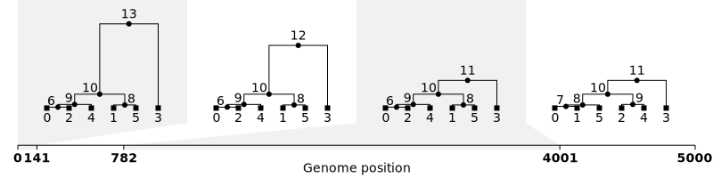
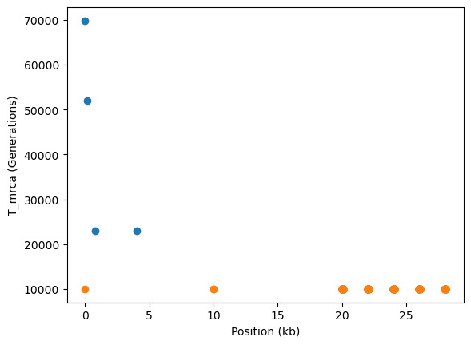
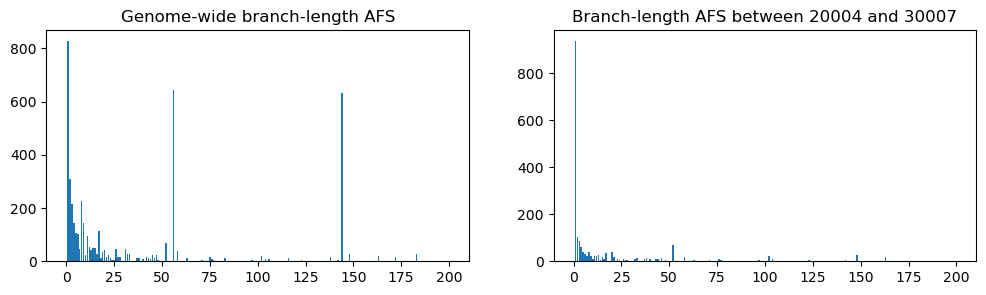
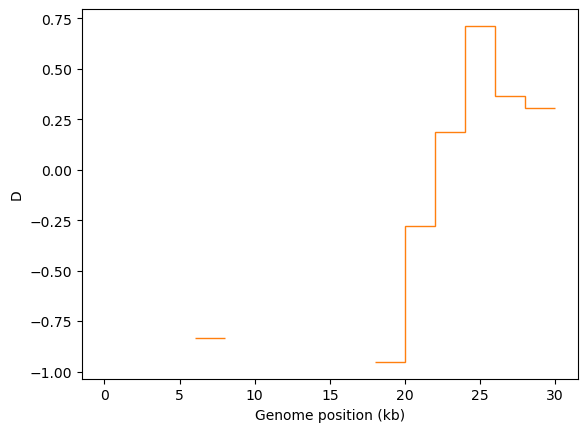
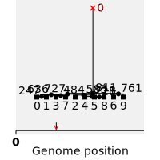

import msprime, tskit, pyslim, time
import numpy as np
import pandas as pd
from matplotlib import pyplot as pltSimulate an ancestral history for 3 diploid samples under the coalescent
Analyzing treesequence output from SLiM
def TajimasD(ts_list, windows_len=1800):
if type(ts_list) == tskit.trees.TreeSequence:
L = int(ts_list.sequence_length)
windows = np.linspace(0, L, L//windows_len)
plt.stairs(ts_list.Tajimas_D(windows=windows), windows/1_000, baseline=None) # Default is mode="site"
plt.title("Tajima's D")
plt.xlabel("Genome position (kb)")
plt.ylabel("D")
plt.show()
elif type(ts_list) == list:
for ts in ts_list:
L = int(ts.sequence_length)
windows = np.linspace(0, L, L//windows_len)
plt.stairs(ts.Tajimas_D(windows=windows), windows/1_000, baseline=None)
plt.xlabel("Genome position (kb)")
plt.ylabel("D")
plt.show()
return 0
def Tmrca(ts_list):
#Plotting TMRCA for given tree sequence
if type(ts_list) == tskit.trees.TreeSequence:
#filtering trees with more than one branch
trees_onebranch = [tree for tree in ts_list.trees() if len(tree.roots) == 1]
tmrca = np.zeros(len(trees_onebranch)) #initializing lists
breakpoints = np.zeros(len(trees_onebranch))
for tree in ts_list.trees():
if len(tree.roots) == 1:
tmrca[tree.index] = tree.time(tree.root)
breakpoints[tree.index] = tree.interval[0] #t[0] + (t[1] + t[0] / 2)
plt.plot(breakpoints / 1000, tmrca, "o")
plt.ylabel("T_mrca (Generations)")
plt.xlabel("Position (kb)")
plt.show()
elif type(ts_list) == list:
for ts in ts_list:
trees_onebranch = [tree for tree in ts.trees() if len(tree.roots) == 1]
tmrca = np.zeros(len(trees_onebranch)) #initializing lists
breakpoints = np.zeros(len(trees_onebranch))
for tree in ts.trees():
if len(tree.roots) == 1:
tmrca[tree.index] = tree.time(tree.root)
breakpoints[tree.index] = tree.interval[0]
#t[0] + (t[1] + t[0] / 2)
plt.plot(breakpoints / 1000, tmrca, "o")
plt.ylabel("T_mrca (Generations)")
plt.xlabel("Position (kb)")
plt.show()
return 0def ts_visualizer(ts_list, startpos, endpos):
Tmrca(ts_list)
fig, (ax1, ax2) = plt.subplots(ncols=2, figsize=(12, 3))
for ts in ts_list:
L = int(ts.sequence_length)
windows = np.linspace(0, L, num=L//500)
ax1.stairs(ts.diversity(windows=windows), windows/1_000, baseline=None) # Default is mode="site"
ax1.set_title("Site-based calculation")
#ax1.set_xlim(4e3, 6e3)
ax1.set_yscale("log")
#ax1.set_ylim(1e-6, 1e-2)
ax2.stairs(ts.diversity(windows=windows, mode="branch"), windows/1_000, baseline=None)
#ax2.set_xlim(4e3, 6e3)
ax2.set_yscale("log")
ax1.set_ylabel("Diversity")
ax1.set_xlabel("Genome position (kb)")
ax2.set_xlabel("Genome position (kb)")
ax2.set_title("Branch-length-based calculation")
plt.show()
fig, (ax1, ax2) = plt.subplots(ncols=2, figsize=(12, 3))
for ts in ts_list:
afs1 = ts.allele_frequency_spectrum(polarised=True, mode="branch")
ax1.bar(np.arange(ts.num_samples+1), afs1)
ax1.set_title("Genome-wide branch-length AFS")
restricted_ts = ts.keep_intervals([[startpos, endpos]])
afs2 = restricted_ts.allele_frequency_spectrum(polarised=True, mode="branch")
ax2.bar(np.arange(restricted_ts.num_samples+1), afs2)
ax2.set_title(f"Branch-length AFS between {startpos} and {endpos}")
plt.show()
TajimasD(ts_list)
'''
afs = ts.allele_frequency_spectrum()
plt.bar(np.arange(ts.num_samples + 1), afs)
plt.title("Unpolarised allele frequency spectrum")
plt.show()
'''
return 0import msprime
from IPython.display import SVG, display
# with recombination on a 5kb region with human-like parameters.
ts1 = msprime.sim_ancestry(
samples=3,
recombination_rate=1e-8,
sequence_length=5_000,
population_size=10_000,
random_seed=123456)
# Visualise the simulated ancestral history.
SVG(ts1.draw_svg())
n_windows = 5
ts2.Tajimas_D(windows=np.linspace(0, ts2.sequence_length, n_windows + 1))
ts = ts2ts_visualizer([ts1, ts2], 0, 1000)
/scratch/usertmp/ipykernel_2415818/2966275299.py:12: UserWarning: Data has no positive values, and therefore cannot be log-scaled.
ax1.set_yscale("log")


0def ts_analyzer(ts_list):
passswept_tree = ts.at(10_000) # or you can get e.g. the nth tree using ts.at_index(n)
intvl = swept_tree.interval
print(f"Tree number {swept_tree.index}, which runs from position {intvl.left} to {intvl.right}:")
# Draw it at a wide size, to make room for all 40 tips
swept_tree.draw_svg(size=(1000, 200))Tree number 1, which runs from position 10000.0 to 10001.0:
reduced_ts = ts.simplify([0, 1, 2, 3, 4, 5, 6, 7, 8, 9]) # simplify to the first 10 samples
print("Genealogy of the first 10 samples for the first 5kb of the genome")
reduced_ts.draw_svg(x_lim=(0, 5000))Genealogy of the first 10 samples for the first 5kb of the genomed = ts.diversity()
print(f"Average diversity per unit sequence length = {d:.3G}")Average diversity per unit sequence length = 0.000345windows = np.linspace(0, ts.sequence_length, num=5)
d = ts.diversity(windows=windows)
print(windows, d, sep="\n")[ 0. 7502. 15004. 22506. 30008.]
[0. 0. 0.00032951 0.00105048]